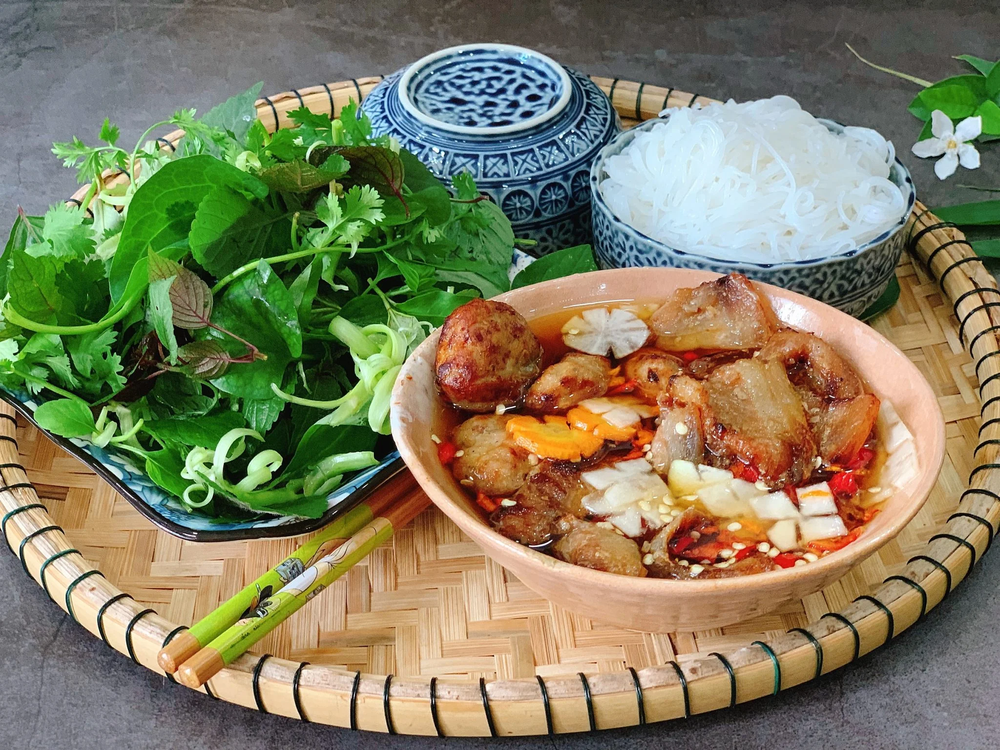

Home
Bun cha: Party recipe

Description
Vietnamese traditional food in which a mix of spring rolls, special sauces, herbs and vermice creates an interesting and harmonious flavor
Ingredients
- Fresh vermice
- Pork Belly
- Ground pork
- Carrot
- Green Papaya
- Lettuces and herbs
- Chopped purple onions
- Chopped garlic and chilli
- Other spices
Steps
- Wash and marinate the meat
- Prepare other ingredients
- Grill the meat
- Prepare the special sauces